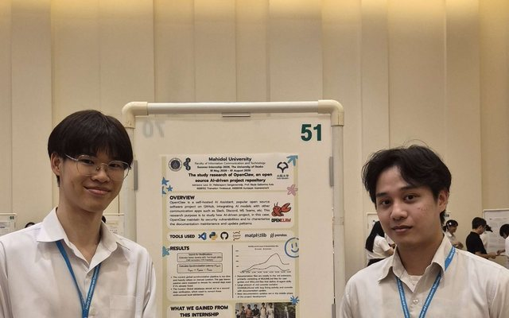
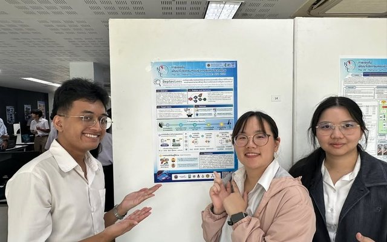

Sep 2026
Two papers from student internships at Kyushu University were accepted at APSEC 2026 in Bali, Indonesia.
Read on SERU News →Faculty of ICT · Mahidol University
ผศ.ดร.มรกต เชิดเกียรติกุล
Assistant Professor · Software engineering researcher
Associate Editor
Automated Software EngineeringSpringer Nature, since January 2026Google Scholar
About
Morakot Choetkiertikul is an Assistant Professor at the Faculty of Information and Communication Technology, Mahidol University, Thailand. His research covers empirical software engineering, mining software repositories, and AI for software engineering. Since January 2026, he has served as an Associate Editor of the Automated Software Engineering journal (Springer Nature). He also works with the Thai software industry and public agencies as an ISO/IEC 29110 consultant and IT auditor.
Beyond the university
Two papers from student internships at Kyushu University were accepted at APSEC 2026 in Bali, Indonesia.
Read on SERU News →
Summer interns presented their research from partner labs in Japan at the ICT Internship Poster Exhibition 2026.
Read on SERU News →
DepSecLens, a dependency security tool built by a student team he advised, received an Honorable Mention at the 28th National Software Contest (NSC 2026).
Read on SERU News →M. Choetkiertikul, S. Kancharoendee, C. Jongyingyos, T. Phichitphanphong, C. Ragkhitwetsagul, B. Reid, R.G. Kula, T. Sunetnanta
Empirical Software Engineering, 31(3), 65, 2026
M. Choetkiertikul, P. Banyongrakkul, C. Ragkhitwetsagul, S. Tuarob, H.K. Dam, T. Sunetnanta
IEEE Transactions on Software Engineering, 51(1), pp. 220–242, 2025
M. Choetkiertikul, H.K. Dam, T. Tran, T. Pham, A. Ghose, T. Menzies
IEEE Transactions on Software Engineering, 45(7), pp. 637–656, 2019
M. Choetkiertikul, H.K. Dam, T. Tran, A. Ghose
12th Working Conference on Mining Software Repositories (MSR 2015), pp. 280–291
ACM SIGSOFT Distinguished Paper Award